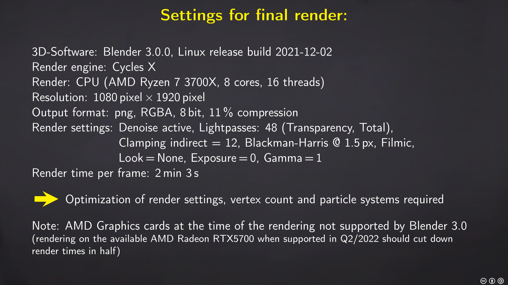

ART PORTFOLIO
This webpage is a collection of my art-related projects I have been working on since 2013. Most files are available in the associated github-repository: https://github.com/d-sacre/portfolio. If files are stored on an external server (e. g. a server of a publisher), I will provide the link to the original source.
LICENSING
If not stated otherwise, all the content on this webpage is licensed under Creative Commons Attribution-NonCommercial-NoDerivatives 4.0 International (CC BY-NC-ND 4.0), https://creativecommons.org/licenses/by-nc-nd/4.0/.
Blender 3.0, Cycles X: Dynamic Skyboxes and Particle Systems
Last Update: January 24, 2022
For me, every new Blender Release is very exciting. In Blender 2.8, it was the real-time rendering engine EVEE, and for Blender 3.0, there are so many features that I do not even know where to start. As an owner of an AMD Radeon RTX5700, I am curious how the official AMD graphics card support scheduled for Q2/2022 (Linux) will boost my render performance. Until this feature is officialy released, there are plenty of things to discover: a Blender update usually comes with so many changes in the functionality and GUI that a "familiarization project" is always a great idea. This time, I wanted to create a scene with a Particle System, since I had some (performance) issues with them in the past. For the composition, I was thinking about a lighthouse situated on top of a cliff. That was something I had never done and the cone shape should put my hard surface modeling capabilities to the test. After getting the proportions right and a establishing a pleasant compostion, I gradually added more details to the scene, such as plants, a bench, etc. The grass is a simple Particle System of Type "Hair". It took some time until I could produce a satisfying density and color variation. In the end, I used two Particle Systems with different settings and colors. Throughout the whole process, I was dissatisfied with the lighting: Instead of photorealism, I was looking for a more cartoonish look. My first attempt was to crank up the intensity of my main scene light. This resulted in issues with the colors and shadows. Afterwards, I tried an HDRI. The illumination was better, but the ultra-realistic sky of the chosen HDRI as a backdrop did not fit the cartoonish style in the foreground. By accident I stumbled across a new-to-me feature in Blender: Dynamic Skyboxes. The setup was very simple; just setting the sky and horizon color as well as the sun properties. After some test renders and tweaking the oversaturated colors (due to my previous brute force attempts) I got a nice, partially cloudy sky. As expected, the render time increased drastically when switching from normal lighting to the skybox. The final render at 1080 pixels by 1920 pixels took on my Threadripper 16 Thread CPU over two minutes (2:03). After the Blender update, I noticed that the out-of-the-box settings increased the render times in comparison to previous version Blender 2.9. However, the simple sky generation did in my opinion more than justify it. The settings for the final render are shown in the image below.  For those who are interested in my artistic decisions, I created a pdf-presentation outlining the main progression points. It can be downloaded from here.
Blender: Create Scientific Illustrations
Last Update: January 24, 2022
Whilst working on scientific publications, there is usually no graphics designer available. Additionally, the expensive professional graphics tools are normally not included in the software catalogs of universities or research institutions. For 2D (vector based) graphics, one can still find many great OpenSource alternatives like Inkscape, GIMP and Krita. However, for 3D-graphics creation, there are almost no viable options (besides perhaps for molecular structure visualization). This renders Blender a great choice, not only because it is for free, but also because it has a huge and very active community, which can help in case a scientist with little modeling experience faces any problems.

Little Lighthouse on a Hill
An experiment with Dynamic Skyboxes and Particle Systems in Blender 3.0, Cycles X. Artwork released under CC BY-SA 4.0; available in my ArtStation Portfolio. Contains the following pre-fabs:
- CC-BY-SA 3.0: ivy originally by Onsemeliot, https://opengameart.org/content/ivy, CC-BY-SA 3.0; modified (ivy grapes removed, distorted)
- CC0:
- bench by yethiel, CC0, https://opengameart.org/content/bench-1
- wine barrel by James Ray Cock, CC0, https://polyhaven.com/a/wine_barrel_01

Visualization of Double Slit Experiment
Based upon the "machine gun" thought experiment by Richard Feynman and the explanation in Wolfgang Rößler's book "Eine kleine Nachtphysik". Originally created as a hand drawn sketch for a course assignment and later modeled in Blender for a conference talk. Rendered with Blender 2.79/2.8/2.9, render engine: Cycles. Image released into the Public Domain (CC0); available in my ArtStation Portfolio.
Tags
Art Blender Coding GIMP Inkscape Python